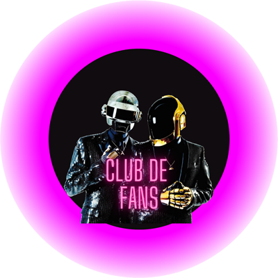

Bienvenido al club de fans de Daft Punk. Donde podras saber mas información de tu artista favorito
Inici
General
Fotos
Videos
Agenda
Contacte
Toda la informacion de un gran grupo aqui
Para todo el mundo